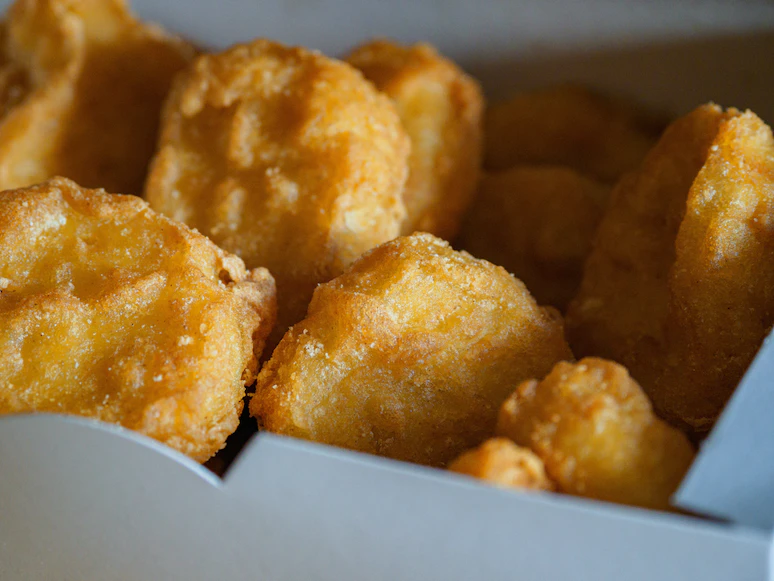

Chicken Nuggets

Blow your whole family away with this delicious chicken nugget recipe.
Ingredients
1 to 1-1/4 pounds chicken breast
Steps
- Place the chicken in the food processor and blend until the chicken is minced. Next, add the spices, cornstarch, and water. Process until combined.
- Using a 1-1/2 tablespoon measure, shape the chicken mixture into a rectangular shape in your hand and place it on a baking tray with parchment paper and freeze in the freezer for 30 minutes.
- Heat approximately 3-4 cups of vegetable oil in a frying pan or deep fryer.
- Dredge each nugget in the flour to cover, then into the egg, and finally, coat it in bread crumbs.
- Fry the nuggets in batches, if necessary, in oil for about 6-8 minutes, or until golden brown, flipping halfway through the cooking time, if necessary.
- Remove to a paper towel-lined platter or tray briefly to absorb some of the excess oil before serving.
Back